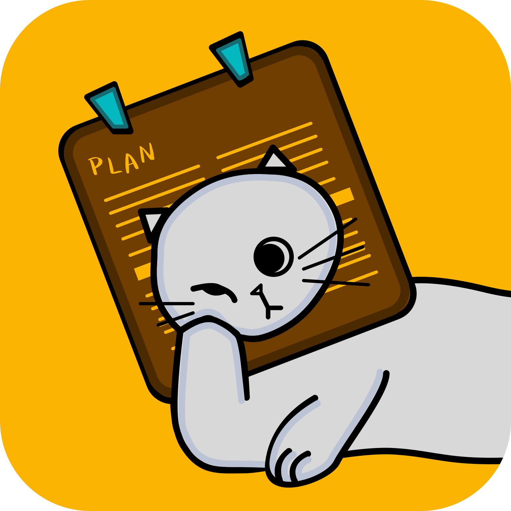

旅行计划小助手
Lazy-Plan
为了申请卡耐基梅隆大学产品及服务设计硕士学位，我于2019年10-12月独立进行了本次作品的设计。本设计作品旨在为用户提供一个符合用户习惯的攻略整理工具；并从安全感的角度，主要解决用户在行前准备中最关注的目的地社会环境认知信息不对称的问题。

为了申请卡耐基梅隆大学产品及服务设计硕士学位，我于2019年10-12月独立进行了本次作品的设计。本设计作品旨在为用户提供一个符合用户习惯的攻略整理工具；并从安全感的角度，主要解决用户在行前准备中最关注的目的地社会环境认知信息不对称的问题。
APP design
Travel
UX design
User research
Interaction design
当你下决心准备出发时，最困难的时刻就已经过去了。那么，出发吧！
自助游成为了越来越多旅行者的首选方式。有些人认为制定旅行攻略是快乐源泉，当在目的地的某一刻发现了与自己准备内容的碰撞时，就会产生一种难以形容的成就感；他们也愿意收集每一次出游的行程，构建自己的“收藏地图”。
本次调研的目标用户为 20 - 35岁 群体，该群体拥有较大的市场机会。主要依据有以下三条：
（1）2018年中国国内旅游20 - 35岁群体占比58.6%，是目前中国国内旅游的中坚力量；
（2）2018年上半年中国出境游的主要群体为80后及90后，分别占比31.4%、11.6%；
（3）2019年我国在线旅游用户同样主要集中在80后及90后。
为了体现多数用户的需求并发现群体间需求的一致性与差异性，我选择了旅行目的不同的被访者，包括伴侣蜜月行、朋友团聚行、母女团聚行、与父母小孩休闲旅行、情侣行，同样也涉及国内游及出境游。
面对未知的城市，即便是耳熟能详、网上攻略铺天盖地的目的地，对于第一次去的人来说，都是陌生的。
为了了解基于现象下用户行为的初衷，我将采访内容以Affinity clustering的方法进行多次分类，结合literature review，得到以下结论。
用户的旅行攻略是为建立充足的安全感。
安全感对不同的人来说是存在差异的，且安全感的建立也是由个人建立的。对于每个准备者来说，行前攻略就是为了实现提高个人安全感的提高。
有时候觉得一切都安排好了，也挺无聊的。当你旅行时，你一定希望有什么不一样的事情发生，不然还不如坐在家里。
从用户访谈中，我发现旅游者通常会在行前确定的内容包括城市与城市之间的住宿以及城市间交通，在旅行过程中即时确定的内容是城市之内的景点和城市内的交通。当然，这些信息的固定和不固定也不是一尘不变的，很大程度上取决于该旅游者对目的地环境认知的情况。这也进一步说明了相对于住宿、交通和景点，社会环境的信息不对称才是旅游者在行前最关注的问题。
从安全感的角度出发，确定了本次项目的目标用户。排除了冒险类和跟团类的极端情况，目标用户渴望拥有自由度，但又需要做一定的准备。
如何帮助用户提高他们的安全感并在准备阶段为他们提供一个开放式的旅行备忘书？
我不喜欢看游记中的文字，有的特别长，我主要看图片，看有没有喜欢的地方。
我没看游记，我觉得游记都比较主观，可能我喜欢的地方都没写。
受访者对待视觉信息的一致喜爱为设计原则之一。 他们喜欢图像而不是文字。 他们都想用地图或景点图片来决定他们可能去哪里。
有的受访者甚至会把地图打印出来做标记，旅行是一个过程，一个由点和线连接起来的过程。整体性的把握带给用户更强的安全感。因此，我最终选择地图为旅行计划的主要形式。

- 人们更愿意信任当地人提供的信息,当地人能够提供旅行者无法提供的信息；
- 通过交换信息激励用户分享信息；
- 一些在旅行中可能需要的专业性的问题，比如医生，律师等，都能够通过平台接触到，从而减轻用户的担忧。
- 景点选择中，通过图片和一句话的简介让用户了解最客观直接的信息；
- 用户可将喜欢的景点收藏，也可将其直接加入旅行计划。根据调研中用户制定计划的习惯，在加入计划中后，可在Plan页面继续调整自己的选择并进一步了解景点的详细信息，包括营业时间、交通、门票等。
- 计划列表中直接显示“固定”信息，包括城市间交通及住宿；在地图可查看加入的机场、住宿及景点的位置，且可轻松加入和取消景点的选择。
- 用户可通过滑动同时查看景点和计划列表信息。地图显示所有加入计划的景点标识及信息，距离较近的景点会被圈出，方便用户快速确定当天的行程范围。
- 增设购物列表，为用户的国际旅行提供便利。

{kind=link}